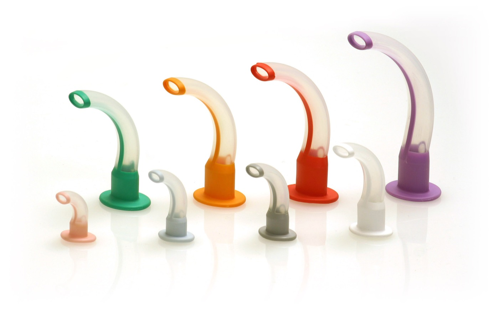
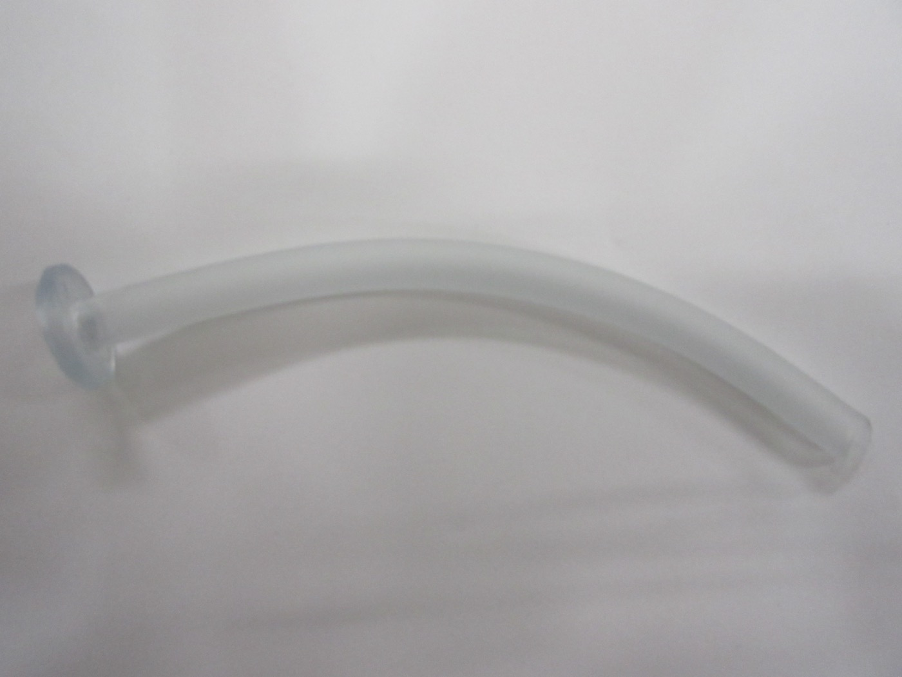
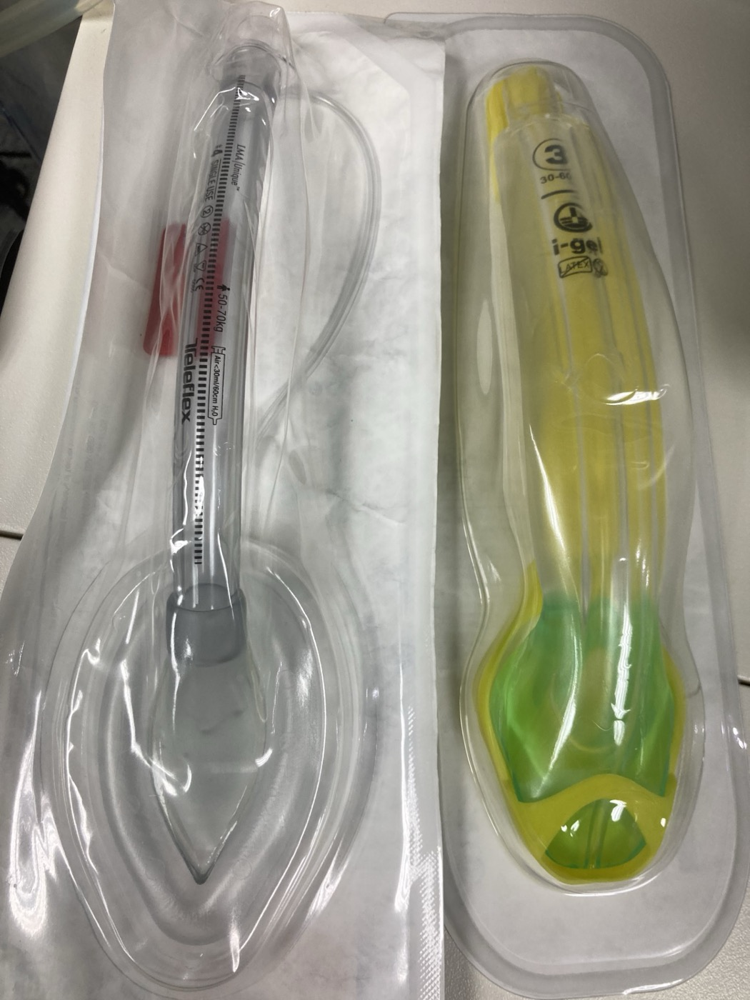

These are the standard definitions (ASA / DAS) used to describe airway difficulty — the precise wording matters in the viva.
Difficult mask ventilation
Inability of a trained anaesthetist to maintain SpO₂ >90% (with 100% O₂) or to prevent/reverse signs of inadequate ventilation using a face mask. Graded by the Han scale (1 easy → 4 impossible).
Difficult laryngoscopy
Inability to see any portion of the vocal cords with conventional laryngoscopy — i.e. Cormack–Lehane grade 3–4 (see the Scores tab).
Difficult tracheal intubation
Proper insertion of the tube requires multiple attempts (in the presence or absence of tracheal pathology). "Failed intubation" = unable to place the tube after the planned attempts.
Difficult SGA placement
Multiple attempts or failure to place, or to ventilate/oxygenate through, a supraglottic airway.
CICO — "can't intubate, can't oxygenate"
The airway emergency: neither intubation nor oxygenation (by mask or SGA) is succeeding. Triggers emergency front-of-neck access (eFONA) — scalpel–bougie–tube cricothyroidotomy.
Difficult airway (overall)
The clinical situation in which a conventionally-trained anaesthetist has difficulty with face-mask ventilation, laryngoscopy, intubation, or all three.
The devices — what each one is
Face mask
A shaped device sealing over the nose and mouth to deliver oxygen/anaesthetic gases and allow positive-pressure ventilation. Non-definitive (does not protect against aspiration). A good seal needs the correct size, the C-E grip, and often a two-person, two-handed technique with an oral/nasal adjunct. A beard, edentulism and obesity are the classic causes of a leak.

Oropharyngeal (Guedel) airways — colour-coded by size.
Intersurgical Ltd, Wikimedia Commons — CC BY-SA 3.0.

Nasopharyngeal (Wendl) airway — soft, better tolerated when the gag reflex is intact.
Wikimedia Commons — CC BY-SA 4.0.
Oropharyngeal airway (OPA / Guedel)
A curved rigid airway that holds the tongue off the posterior pharyngeal wall. Sized incisors → angle of the mandible. Inserted upside-down and rotated 180° (adults). Not tolerated if the gag reflex is present (risk of laryngospasm/vomiting).
Nasopharyngeal airway (NPA / Wendl)
A soft tube from the nostril to the pharynx; better tolerated in the semi-conscious patient. Sized to the nostril → tragus. Avoid in a suspected base-of-skull fracture.
Supraglottic airway (SGA / LMA)
A device sitting above the glottis that seals around the laryngeal inlet. First-generation (classic LMA) seals only; second-generation (ProSeal, Supreme, i-gel) add a gastric drain port and a higher seal pressure — a primary airway, a rescue device and a conduit for intubation.
Tracheal (endotracheal) tube (ETT)
The definitive airway — a cuffed tube through the cords into the trachea, protecting against aspiration and allowing controlled ventilation. Sized by internal diameter (≈7.0–7.5 mm women, 8.0–8.5 mm men) and confirmed by capnography.
Cricothyroidotomy — emergency access through the cricothyroid membrane (scalpel–bougie–tube). Tracheostomy — a planned/definitive airway through the tracheal rings (percutaneous or surgical), for prolonged ventilation, weaning or upper-airway obstruction.

Supraglottic airways — a cuffed LMA Unique (left) beside a cuffless second-generation i-gel (right, with its gastric channel).
Wikimedia Commons — CC BY-SA 4.0.
🪜 The device ladder — from least to most invasive
Face mask (± OPA/NPA) → supraglottic airway → direct or video laryngoscopy → flexible bronchoscopic intubation → front-of-neck access. At every rung the priority is oxygenation, not the tube. The stepwise management of failure lives with the guideline algorithms — open the Guidelines library →